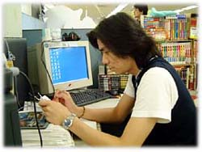
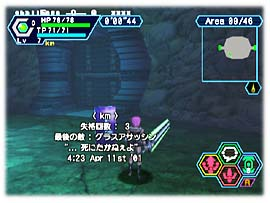
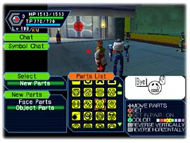
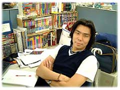

| 『 ファンタシースターオンライン 』 | ネットワーク関連担当 | 森本兼次郎 |
| 『 ファンタシースターオンライン 』 | ネットワーク関連担当 | 森本兼次郎 |
|
■プロフィール■ プランナー。入社の動機は安易だけど“開発”っていう仕事に憧れていたから。 セガを選んだのは、子供の頃「セガ マークⅢ」を持っていたからかな。 『ソニックアドベンチャー』を経て『PSO』、『PSO Ver.2』に。 『ソニック』ではエネミー、ボス等を担当。 |
|
■『PSO』『PSO Ver.2』での担当個所と業務内容を教えてください。
 ■ログインシーケンスからビジュアルロビー ■コミュニケーション機能関連 ・ワードセレクト ・シンボルチャット ・ギルドカード、シンプルメール etc. あと、マップ（森面）をちょっと。 『PSO Ver.2』 ■チャレンジモード ■チョイスサーチ |
|
■『PSO』はコミュニケーション機能が充実していますが、それら機能が生まれた過程をご紹介ください。
最初は全世界同時発売を狙っていたんです。 そこで“ウリ”になるシステムは何か…ってところで、「言葉の壁を越えたコミュニケーション」を目標としました。 そこから生まれたのが『ワードセレクト』や『シンボルチャット』。 あと、コミュニケーションをサポートするために、名詞代わりとなる『ギルドカード』、 待ち合わせのために『シンプルメール』など、需要あって供給ありみたいなところもあります。 |
|
■特に“ワードセレクト”機能は苦労の跡が伺えますが…(^^
そうですね。何せ英･仏･独･西語といったヨーロッパ言語4ヶ国語まで対応しなければならなかったですから。 最初は日本語と英語の文法整合から始めて、それをベースに他の3ヶ国語に対応しようかと単純に思っていたんですが、 やってみるとジェンダーとかスペイン語の補語属性とか、一筋縄では行かない面がいっぱい出てきて。 相談するにも3カ国語に精通しているスタッフなんて社内にはいないし。 まあ、紆余曲折がありながらも、何とか完成させたわけですが、もし言語知識の豊富な方がいらっしゃったら、 是非5ヶ国語全て試してみてください。 そこには僕の血と汗と涙の跡が…。 |
■ユーザーが自由に作成できる“シンボルチャット”については？
 見吉（『PSO』ディレクター）に『世界共通言語』を作れと言われました。
最初は「何言ってるの？この人」なんて思ったんですが、メール等の文末に付ける“顔文字”を見てて
アイディアが生まれました。
あれって主に感情を演出しているので、それと視覚的に意味を持ったシンボルを組み合わせれば、
面白いんじゃないかって。
例えば「エネミー」のシンボルを「困っている顔」の周りに付けて、「助けて！囲まれた！」とか。
あとは、「作る楽しみ」を組入れることにって、個性の演出ができるんじゃないかと思って、
現在の形にまとまりました。
最初に原案をプレゼンしたときはチーム内でも色々意見が分かれましたが、最終的に実装することができて
良かったと思います。
見吉（『PSO』ディレクター）に『世界共通言語』を作れと言われました。
最初は「何言ってるの？この人」なんて思ったんですが、メール等の文末に付ける“顔文字”を見てて
アイディアが生まれました。
あれって主に感情を演出しているので、それと視覚的に意味を持ったシンボルを組み合わせれば、
面白いんじゃないかって。
例えば「エネミー」のシンボルを「困っている顔」の周りに付けて、「助けて！囲まれた！」とか。
あとは、「作る楽しみ」を組入れることにって、個性の演出ができるんじゃないかと思って、
現在の形にまとまりました。
最初に原案をプレゼンしたときはチーム内でも色々意見が分かれましたが、最終的に実装することができて
良かったと思います。
|
■全世界対応を謳う『PSO』、そのため海外にまで行かれて打ち合わせをしたとか？
 イギリスのSOE（SEGA EUROPE.Ltd)に行って、主にローカライズ（特に『ワードセレクト』）
に関する問題点を対処すべく、暴れてきました。
丁度ECTS（こっちで言う東京ゲームショーみたいなもの）が開催されていたし、SEGAのプライベートショーも
あったんで、結構楽しんできました。
イギリスのSOE（SEGA EUROPE.Ltd)に行って、主にローカライズ（特に『ワードセレクト』）
に関する問題点を対処すべく、暴れてきました。
丁度ECTS（こっちで言う東京ゲームショーみたいなもの）が開催されていたし、SEGAのプライベートショーも
あったんで、結構楽しんできました。
そういえばこんなこともありました。 プライベートショーの帰りに、現地スタッフと一緒に飲んでたんですが、そこで誰かが僕の肩を叩くんです。 振り向いてみると、それはマッチョな黒人の方で、何やら話しかけてきているのですが、何を言っているの やらさっぱり。 スタッフの方に翻訳してもらうと、「2分だけでいいから、彼と話す時間をくれ」と言っているようです。 「英語話せまへん」ということで去ってもらいましたが、一体彼は2分間の間に僕をどうするつもりだったんでしょう。 |
|
■『PSO Ver.2』の新モード“チャレンジモード”が生まれた経緯は？
 “試練”をテーマに考え出されたモードです。 最初はダンジョンをどこまでも深く潜っていく“マラソン”的な楽しみ方を考えていたのですが、 『PSO』との差別化を考えていくうちに“試練”＝“緊張感”->“喜びの共有”みたいな図式が浮かび 上がってきました。 「一人一人が責任を負っている -> だから達成したときに喜びを分かち合える」 そんな団体スポーツみたいな楽しみ方を演出したくて、1人でも倒れたらゲームオーバーというシステムにしました。 でも「喧嘩になることもあるだろうな…」と思い、それを回避するためにお墓の遺言の様な“笑い” の要素も取り入れてみました。 一緒に組んだスタッフも色々アイディアを出してくれて、個人的には『Ver.2』の中で一番面白いものに 仕上がったのではないかと思っています。 |
|
■“チョイスサーチ”もイイ味出してますね。
“チョイスサーチ”の仕様は、実は『PSO』の時に既に出来上がっていたんです。 スケジュール上の問題で作り上げることができなくて、『Ver.2』の話が出たときに リニューアルして実装することができました。 検索用の項目（キーワードなど）は、あとから内容を変更できるようにしたり、色々応用の 効くモノを作ることができました。 この辺はアイディアを提供してくれたソフト（プログラマー）の外木に感謝ですね。 |
|
■ネットワークRPGの開発は初めてだったと思うのですが、心がけた事や発見した事はありますか？
“ライブ感”みたいなところかな。 今までのネットゲームって、確かにチャットコミュニケーションは成立しているのだけど、そこに本当に友達がいるみたいな意識ってないでしょう。 だから「実際に友達が近くにいて、その友達の感情が伝わってくる」、そんな世界を作れるように心がけてました。 そして生まれたのが、ビジュアルロビーやチャットの吹き出しといった要素です。 |
|
■担当箇所で楽しまれた点や満足されている部分はどのようなところでしょうか？
 辛い思い出が多いんで、あまり楽しんだ要素を思い出せないんですが…。 思い出せることといえば『シンボルチャット』に関してです。 『シンボルチャット』は開発途中でスケジュール的に無理なのではないかと、一時はスペックダウンも覚悟しましたが、 担当デザインやソフトの粘りが実装へと結びついた様です。 検索エンジンで「シンボルチャット」という言葉が検索に引っかかったときは、ホント嬉しかったです。 |
|
■開発中に印象に残っていることは？
開発スタッフが本当に楽しみながら、チャレンジモードのデバッグをしている姿を見て「やったな！」って思いました。 |
|
■最近興味を持っていること、気になる存在などありましたら聞かせてください。
“キャノンボール”です。 ソフトの節政氏がＮＳＸを購入してブイブイ言わしているみたいなんで、いっちょ勝負してやろうかと思っています。 中さんのエリーゼも含めて大々的に。 僕ですか？僕は実家のブルーバードで参加します。 そいでもって、二人がスピード違反で捕まっている時に、その横を駆け抜けていくつもりです。 まあ、それは冗談として実現したいですね。キャノンボール。 |
|
■今後、目指されることは？
 明確に将来の姿を思い浮かべているわけではないです。 学生の頃は音楽で飯を食っていきたかったし、今はゲームで飯を食っている訳だし。 1つ1つ夢を叶えていけたらな…なんて、贅沢な考えを持っています。 |
|
■最後に、『PSO』（ソニックチーム）ファンのみなさんへ一言お願いします。
『ＰＳＯ』のゲーム性は無限です。 ユーザーの方の意識によって、より新しい楽しみ方が見つかるはずです。 僕たち開発はその為の舞台を用意したにすぎません。 皆様の手で『ＰＳＯ』の世界を120％以上堪能してみてください。 |